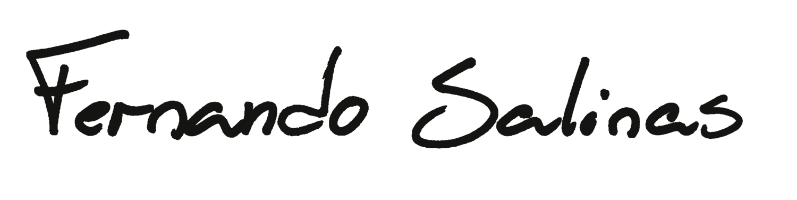
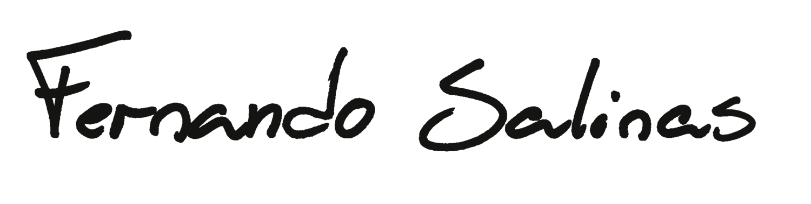

Contrato
El presente contrato, que a continuación denominará a la empresa desarrolladora de Software Contratado, y a la empresa que paga por el servicio Contratante, procede a suscribir los términos y condiciones del acuerdo mutuo, mencionados a continuación, para su aceptación por ambas partes.
En caso de rompimiento de alguno o algunos de los acuerdos a continuación mencionados, cada parte se comprometerá a cubrir los gastos de su defensa.
- El objeto del contrato de software, consiste en la entrega de una página web en la cual se pueda obtener un plano de metalmecánica en PDF, suministrando al programa un código de referencia para uso exclusivo del Contratante, y que no se extiende a terceros.
- La página web será entregada en su totalidad después de dos (2) meses de firmado este contrato.
- El Contratante como el Contratado se comprometen a proteger los datos y la privacidad de la información compartida en cualquiera de los casos o escenarios.
- En caso de comprobarse una transgresión a la privacidad de la información, se indemnizará con 50 SMLV a la otra parte.
- El software se entregará corriendo sobre el servidor actual del Contratante. El Contratado se reserva la integridad total del código utilizado en la producción del software.
- El Contratado se compromete a dar soporte y mantenimiento gratuito durante 2 meses como garantía de su trabajo.
- La forma de pago se realizará 50% al momento de la firma de este contrato y 50% al momento de entrega del proyecto.
Después del acta de entrega, cualquier servicio o requerimiento adicional puede ser facturado adicionalmente por medio de una cotización formal entregada por el Contratado.
Los abajo firmantes manifestamos estar en completo acuerdo a los puntos relacionados en este contrato.
 
